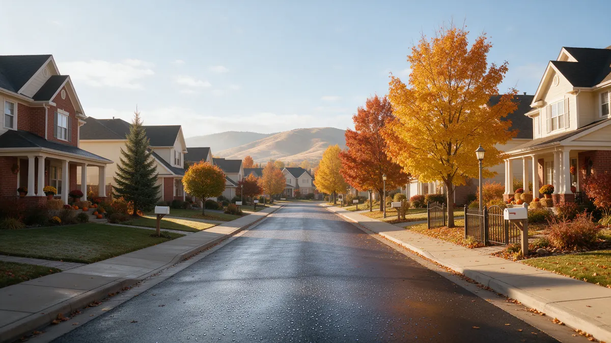

Arvada CO Plumber Guide for Water Leaks

Need a plumber in Arvada CO? This guide is organized by what you will face, from stopping the water to deciding how big a repair should be. Plumbing Pros Colorado is a referral line that connects callers with independent local plumbers, and the plumber you speak with does the work. You will also find notes on Arvada's mix of old and new housing in Jefferson and Adams counties.
Stopping the water
Close the main shutoff, then open an outdoor spigot or a low faucet to drain pressure. If you do not know where the main is, look near where the supply pipe enters the house, often by the water heater or at the front wall of a basement.
If a fixture is the cause, a small oval or round valve under the sink or behind the toilet will isolate it so the rest of the house keeps water. Dry the area quickly with towels and fans to limit mold.
- Close the main
- Isolate the fixture if you can
- Mop up standing water
- Run a fan on wet drywall
- Take photos
Reading the signs
Arvada has homes from many periods, from houses near Olde Town to subdivisions off Ward Road and Indiana Street. In older houses, rust-tinted water, low flow at one tap and stains on ceilings tend to point to supply lines. In newer houses, look at fittings, supply stops and appliance hoses first.
A sewer problem often shows up as gurgling, slow drains in several fixtures, or a smell near a floor drain. A leak at the water heater shows as pooling at its base or rust streaks on the tank.
Take note of any smells, gurgles or sounds when you call, and which fixtures are involved. Plumbers can often guess whether the problem is supply or drain from that information alone, and arrive with the right equipment.
What the plumber will check first
Expect the plumber to begin with the main and meter, then test pressure. A pressure above what fixtures are rated for strains them, and a pressure-reducing valve may be part of the fix. Then comes inspection of exposed pipe and, if needed, listening gear or thermal imaging to follow a hidden line.
For slow drains, a drain machine or hydro jetting may clear buildup, and a camera inspection can show whether the pipe itself has damage. Clear Creek passes along Arvada's southern side, and creekside properties may have soil that holds more water, which the plumber may consider.
Look at the area around your water heater, since an old tank can leak at its base while looking fine from above. Rust-colored streaks, a damp pan or a wet floor are good reasons to mention the heater when you call.
Questions to ask before saying yes
Ask for a plain description of what failed and why. Ask whether the plumber will repair only the damaged piece or recommend more, and what the reasons are. Ask what material they plan to use, and how access to the work area will be handled and restored.
Because you are working with an independent plumber, agree on scope and timing directly with them. If anything is unclear, ask again before work begins.
Arvada neighborhoods near Ralston Road and the Arvada Center have many mature trees, which are lovely but hard on old clay and cast iron laterals. If roots are in the line, ask about the plan to keep them from returning.
Repair or replace
A cracked fitting on a modern PEX line is a quick local repair. A galvanized line with rough interior and repeated leaks is more likely to need replacement. For clay or cast iron sewer, a section with roots and offsets might be fixed with a spot repair, lining, or replacement, depending on what the camera shows.
Homes with older additions can have transition points between old and new pipe, and those joints deserve a close look. Your plumber can explain which parts are original.
After a repair, run every fixture for a few minutes and look for drips at joints and under floors. Report anything odd soon, while the work is fresh in everyone's mind.
Habits that prevent repeat leaks
Test the main shutoff each spring. Replace old washer hoses, check the water heater pan, and clear gutters so downspouts do not saturate the soil near foundations. Front Range clay swells and shrinks, and keeping moisture even around the house reduces movement.
Before winter, disconnect hoses and drain outdoor lines. During a hard freeze, leave cabinet doors open on exterior walls. These steps take little time and spare you a repair call.
Frequently asked questions
Do I need to be home when the plumber arrives?
Usually someone should be present so the plumber can access the main, the fixtures and the area of the leak. If you cannot be there, arrange for a responsible adult to meet them and share your instructions in writing. Bring the plumber to the meter or main when they arrive and point out any area you suspect, since your observations narrow the search.
What if the leak is in my yard but not near the house?
A leak between the street and the house is often on the service line, which is generally the homeowner's responsibility on the house side of the meter. A plumber can locate it, and the city or utility can tell you where its responsibility stops. Your city or utility can say where its line ends and yours begins, and the plumber can explain what that means for repair.
Why does my toilet run on its own?
A worn flapper, a misadjusted fill valve or a bad seal lets water trickle into the bowl and refill. It may waste a lot of water over time. Replacing the parts is usually a simple repair. A running toilet can also point to a leaking fill valve. Replace the parts rather than ignoring the sound.
Can roots grow into a sewer line?
Yes. Roots seek moisture and enter through small cracks or loose joints, then thicken. A camera inspection will show them, and cutting or hydro jetting can clear the pipe, though repair may be needed to stop them returning. Hydro jetting uses high-pressure water to scour pipe walls, and a camera afterward shows whether the pipe is sound.
Should I shut off my water when I travel?
For longer trips, closing the main is a simple way to reduce risk. If you have a water heater, set it to a vacation setting or turn it off per its instructions, and ask someone to check the house. Do not forget to turn the water heater to a lower setting while you are away.
Plumbing services in Arvada
- Water Leak Repair
- Emergency Plumbing
- Drain Cleaning
- Water Heater Services
- Sewer Line Repair
- Gas Line Services
- Slab Leak Repair
- Pipe Repair & Replacement
- Toilet Repair
- Bathroom Plumbing
Nearby Colorado cities
- Water leak repair in Colorado Springs
- Water leak repair in Broomfield
- Water leak repair in Woodland Park
- Water leak repair in Westminster
Ready to talk to someone? Call (720) 794-0974 or visit find a plumber in Arvada.